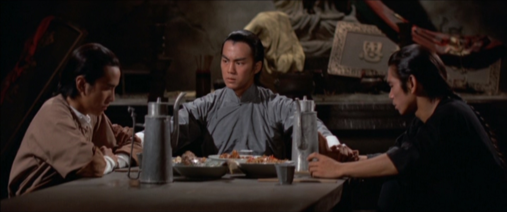
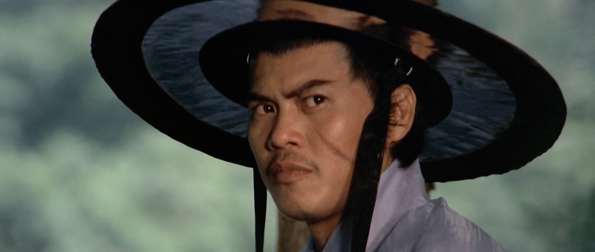
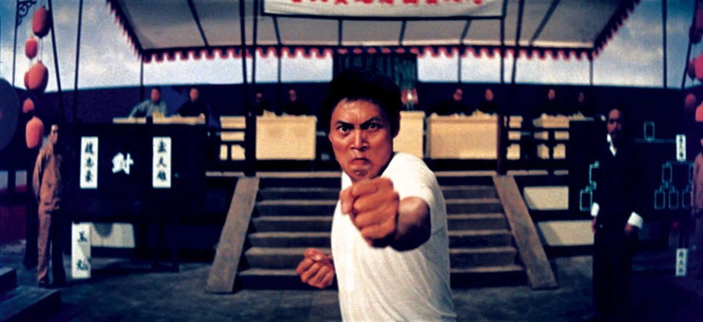
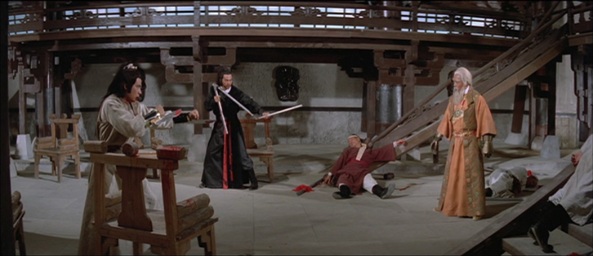
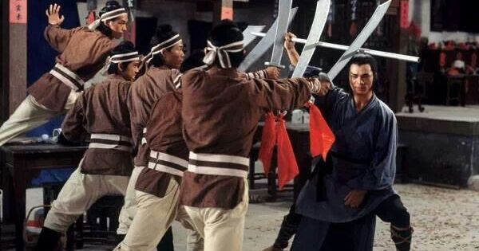
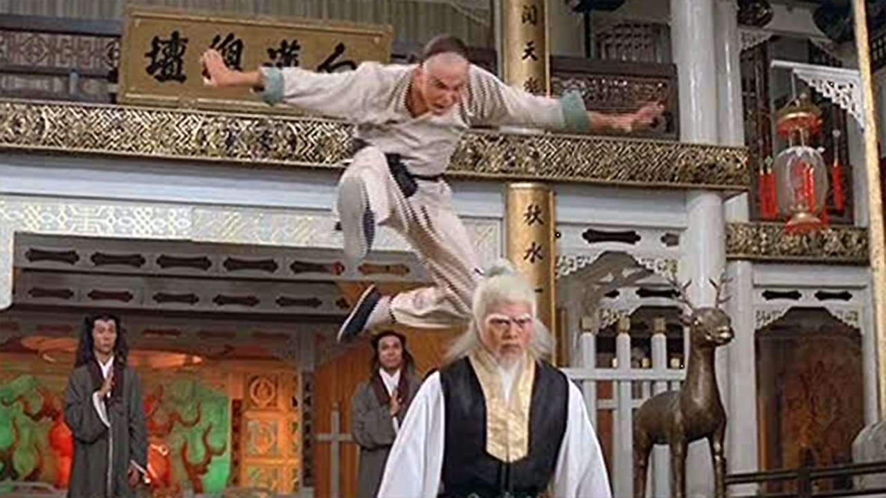
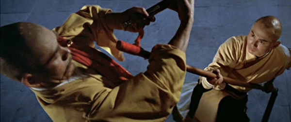

Episode 1: “King Hu and the Road Not Taken”
Film: COME DRINK WITH ME
Synopsis: At the dawn of the modern wuxia film, a genius director and a ruthless producer went to war over a brilliant and beautiful swordsman picture. The film, COME DRINK WITH ME, is to this day regarded as a masterpiece of Chinese language cinema and remains the only film King Hu ever directed for Shaw Brothers.
Will McGuire
Sean Traynor and Daniel Dickerson
08/20/2021

Episode 2: The Iron Triangle”
Film: BLOOD BROTHERS
Synopsis: No director is more responsible for the development, refinement, and execution of the Shaw Brothers style than the legendary Chang Cheh. Cheh mixed youth in rebellion with Chinese pulp fiction, the violence of Japanese samurai films, and the swagger of James Bond. No film better embodies the scope and sweep of this cocktail than BLOOD BROTHERS, the standout picture made with David Chiang and Ti Lung, who would come to be known along with Cheh as "the Iron Triangle."
Will McGuire
Robert Malone and Trevor Stottlemyer
09/13/2021

Episode 3: Clan Fiction”
Film: KILLER CLANS
Synopsis: Shaw Brothers workhorse Chor Yun made his name with complex, character-rich, genre-bending tales of the machinations of good and evil martial clans. This month, we'll be examining KILLER CLANS-- the consensus favorite among fans in this fascinating sub-genre of "Clan Fiction".
Will McGuire
Daniel Dickerson and Trevor Stottlemyer
10/21/2021

Episode 4: From Wuxia to Kung Fu”
Film: KING BOXER
Synopsis: In the early 70's, the cinema of Hong Kong became an international sensation-- a boom of unprecedented popularity for the tiny colonial industry. This boom in popularity coincided with the transition from historical swordsman films, or wuxia, films to modern, hard-hitting films built around hand to hand fighting. In Hong Kong they were called "bashers" but for the rest of the world the deluge of films came to be known as the "Kung Fu Boom". This month, we examine the very first film to get an American release: KING BOXER!
Will McGuire
Sean Traynor and Robert Malone
11/20/2021

Episode 5: Sun Chung, The Unsung Hero
Film: THE AVENGING EAGLE
Synopsis: The Shaw Brothers had a stable of wonderful directors, many of whom remain obscure to all but the most dedicated fans. One such figure is Sun Chung, who produced some of the most innovative, bizarre, and exciting hidden gems that ever bore the studio's name. This month, we examine Chung's most influential film: the tragic and pulse-pounding revenge thriller THE AVENGING EAGLE.
Will McGuire
TBD
12/21/2021

Episode 6: “The Venom Mob”
Film: RETURN OF THE FIVE DEADLY VENOMS
Synopsis: After creative disputes with his longtime collaborator Lau Kar-Leung, Shaw Brothers legend Chang Cheh reinvented his career by enlisting the services of a cadre of newly discovered kung fu stars in gritty, surreal, treachery-laden wuxia films with amazing choreography. Fans dubbed these new stars "the Venom Mob" and this month we'll look at maybe their greatest film, a story of manaiacal sadism and indomitable willpower.
Will McGuire
TBD
01/22/2022

Episode 7: “The Shaolin Temple and Kung Fu Mythology”
Film: CLAN OF THE WHITE LOTUS
Synopsis: Kung Fu began at the Shaolin Temple, and the fear of kung spreading to the people caused the Qing Dynasty to burn it to the ground, thereby causing the very spready they feared most. This is the foundational myth of the martial arts, and no film examines it better than Lo Lieh's seminal CLAN OF THE WHITE LOTUS, examined this month.
Will McGuire
TBD
02/19/2022

Episode 8: “Stronger in Death”
Film: THE EIGHT DIAGRAM POLE FIGHTER
Synopsis: As the tides of fortune turned against Shaw Brothers in the early 80's, and under the spectre of tragedy with the real-life death of leading man Alexander Fu Sheng, director Lau Kar-Leung and star Gordon Liu did more than salvage the picture they were working on-- they crafted a perfect elegy to the power of the Shaw Brothers style. This month, we examine THE EIGHT DIAGRAM POLE FIGHTER, possibly the greatest kung fu film ever made.
Will McGuire
Daniel Dickerson, Robert Malone, Sean Traynor, and Trevor Stottlemyer
03/31/2022